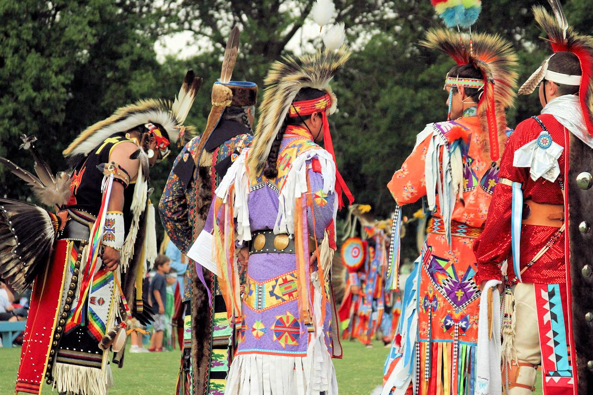
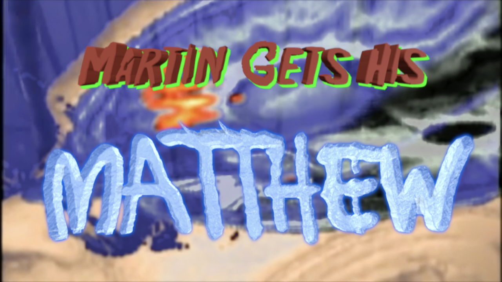

Programming

My interest in programming began from a desire to learn more about modern infastructure. I have experience building websites and apps in:
- HTML
- CSS
- JavaScript
- React
Tribal Identity
Besides programming, I am an active member of the Peoria Tribe of Indians of Oklahoma. Originally from Illinois, we are a small Indian tribe with less than 4,000 members. I have spent a lot of time writing proposals for the Council to review, all of which have been aimed at improving life for the average citizen.
I have also spent a lot of time doing volunteer work for my tribe. I spent several days cleaning the headstones at our tribal cemetery and I have also filmed several tribal gatherings. My work with my tribe is extremely rewarding and I aim to continue it into the future.
Creative Work
In addition to tribal work I have also done a lot of creative work in the past! Art has always been a passion of mine. I have made many short films, painted, crafted Native American jewelry, written and self-published my own book. I even performed magic as a child, if you can believe it (I was on the news once)!